Carrozzeria Vignale · Lancia
Lancia’s by Vignale
Aprilia
1949 Lancia Aprilia Coupé
One of the first cars designed by Giovanni Michelotti and built by Vignale – there were many to follow…
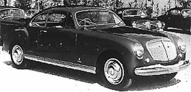
Aurelia
The standard Aurelia had a self-supporting body, but on demand from ‘il carrozzieri’ a chassis could also be delivered. From 1950 to 1956 about 900 Aurelia’s were built. About 300 went to Pinin Farina, mostly 4-seater convertibles. All 900 had ‘one-offs’ in series up to about 20 cars. Vignale surely has built many more than the five Aurelia’s on this page.
1950 Lancia Aurelia B50 Coupé
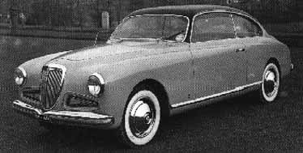
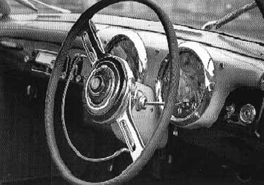
[Picture from “La Lancia”, page 150]
1951 Lancia Aurelia B50 Coupé
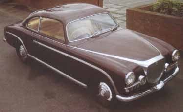
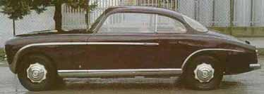
1951 Aurelia B50 Vignale Coupe. One-off, believed built for the 1951 Genoa, Italy Motor Show.
The chassis was ordered in the spring of 1951 from Lancia by a main agent in Novara (Piemonte), Italy. It was delivered in the early fall of 1951 to a wealthy resident of Alessandria (Piemonte), Italy. Nothing is known of its history until it appeared at a Coys of Kensington auction in London in June 1996 (the auction catalog lists a “noted Italian collector” as the seller, and says he purchased the car in 1980 in Napoli – however, it also mentions that it was shown at “the 1951 Genoa Motor Show”. In extensive research in Italy, including at the Biscaretti Museum in Torino, no one could find any evidence of a motor show having been held in Genoa). It was sold to a Japanese collector, who then sold it through a dealer in the San Francisco, California area in early 1997. The current owner purchased the car in March 1997 and gave it a complete mechanical rebuild (it was not in good running order at all), which was completed recently. Donald is still looking for more information on his car! (Jun 98)
1952 Lancia Aurelia B52 Coupé
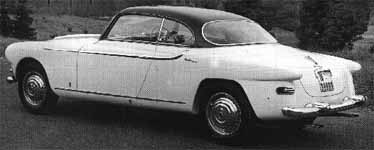
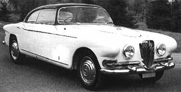
[Picture from “La Lancia”, page 149]
Other Aurelia’s
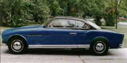
Aurelia B50 coupe, 1950. (Former) owner: Bengt Gustavsson. This car was for sale in January 1997.
Flavia
The Flavia Convertibile was introduced at the Turin Motor Show of November 1962. Production started in December 1962. Until May 1964 a total of 1,601 Flavias were built. Due to low sales figures from both Vignale and Lancia during this period, the last Flavias were only sold in 1968.
1966 Lancia Flavia Convertibile
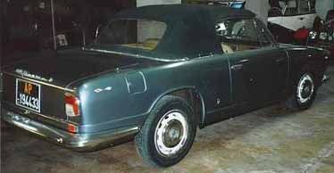
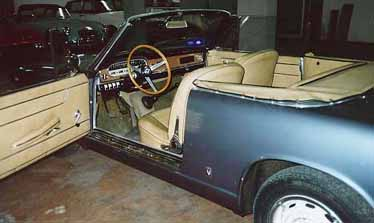
1964 Lancia Flavia Convertibile
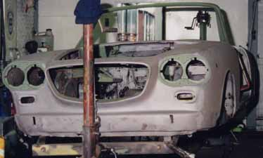
Currently being restored. Owner: Alfred Verschoor.
Lancia Flavia Convertibile
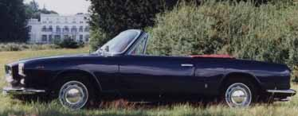
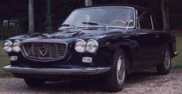
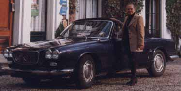
Owner: Heidi Schulz.
Appia
The Appia Convertibile was available as a 2-seater from 1957 to 1959 and as a 2+2 from 1959 to 1962.
The Appia Lusso is always a Coupé; in fact it is a 2+2 with a welded hard-top. It was also produced from 1959 to 1962.
The 2+2 Convertibile is referred to by many people as the Lusso. This is because the 2+2 and the Coupé were built in the same period and show a lot of resemblance.
Appia Sport, 1956, and Appia coupé prototype [no name?], 1956
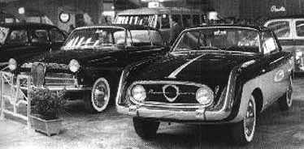
Both cars were shown at the Turin Motor Show of 1956. (“La Lancia”, page 177)
Appia Berlina prototype [no name?]
Built somewhere between 1956 and 1959.
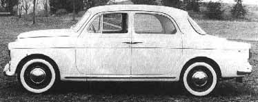
[Picture from “Ardea e Appia”, page 55]
Lancia Appia Lusso
Appia Lusso, 1959-1962, 477 built.
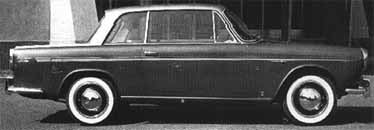
Appia Convertibile, 1957-1962
Total produced: 1,586.
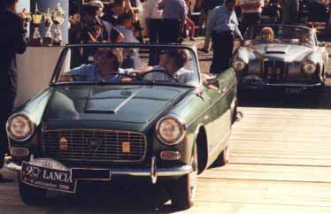
Owner: Sylvia and Helmut Hagenberger.
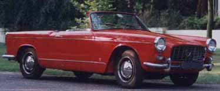
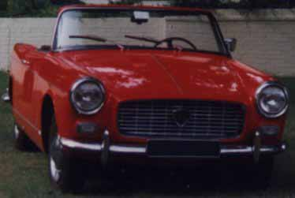
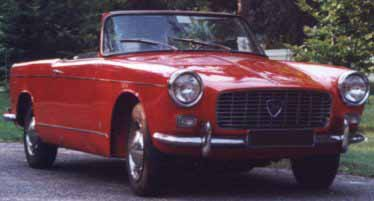
Owner: Jaap Buitenhuis.
Flaminia
Flaminia Spyder, 1959. Shown at the Turin Motor Show, 1959 – “La Lancia” mentions it, but does not show a picture (page 228).
Fulvia Coupé
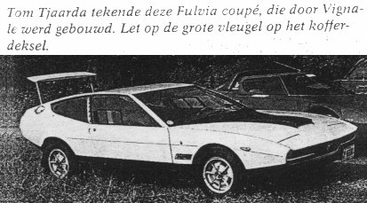
From: Oldtimer Encyclopedie – Sportauto’s 1945-1975. Author: Rob de la Rive Box [ISBN 903960320-0]
More Lancia information
Books:
“La Lancia” by Wim Oude Weernink, G. Nada. “Lancia Ardea e Appia” by Giorgio Nada.
On the web:
Viva Lancia – information, service and parts for your historic Lancia.
Most information and pictures on this page thanks to: Alfred Verschoor.